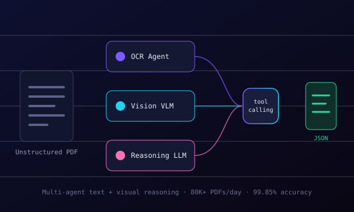
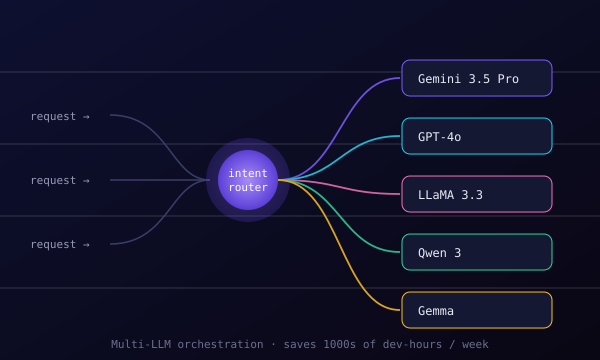
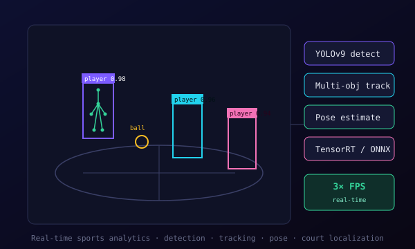
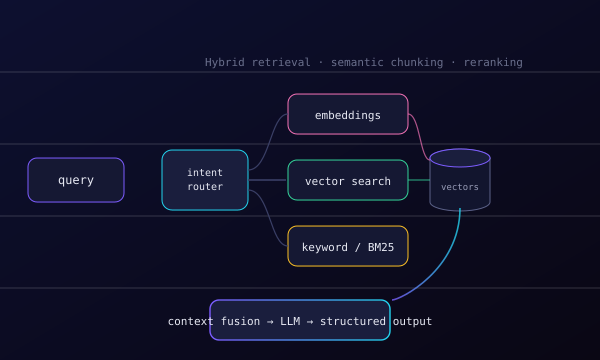
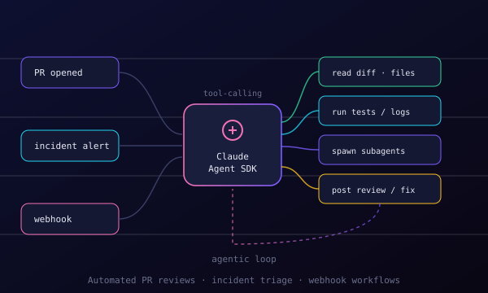
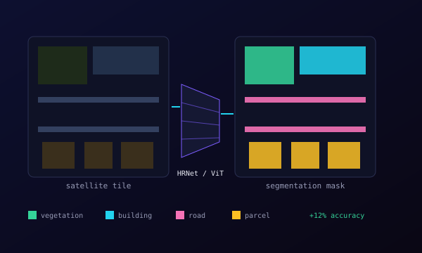

Applied AI engineer & team lead who takes frontier research to production — RL post-training (GRPO) of SOTA LLMs & VLMs, multimodal pipelines fusing 5+ models, and architecture-level tuning for fast inference. Full stack: from model weights to Kubernetes.
I'm an AI engineer working across NLP, vision, and everything multimodal — at the intersection of deep-learning research and large-scale systems. I pretrain and fine-tune state-of-the-art LLMs and VLMs (LLaMA 3.3, Qwen 3, Gemma, Gemini 3.5 Pro, GPT-4o) using LoRA/QLoRA and RL post-training with GRPO to build reasoning and thinking capabilities into domain models.
Today I lead the development of an enterprise-scale, agentic AI document intelligence platform processing 80K+ PDFs a day — multi-agent text + visual reasoning that fuses 5+ specialized models (detection, OCR, VLMs, reasoning LLMs, embeddings) in a single microservices-based application, with tool-calling, subagents, and skills. Along the way I've built RAG systems, multi-LLM orchestration infrastructure, and extraction pipelines that took accuracy from 35% to 99.85%.
I also go below the framework line — tinkering with model architectures, quantization, and graph-level optimization to hit aggressive inference targets. Those instincts come from years of computer vision: real-time sports analytics, satellite segmentation, pose estimation, and edge deployment. I care about the whole stack, from a novel architecture to a quantized engine shipping 3× the FPS.

An enterprise-scale agentic platform that reads unstructured real-estate documents through multi-agent text + visual reasoning — 5+ specialized models (detection, OCR, vision VLMs, reasoning LLMs, embeddings) coordinated with tool-calling and subagents across microservices. Processing 80K+ PDFs a day with structured, auditable output.

An intent-routing layer that dispatches each request to the right model — Gemini 3.5 Pro, GPT-4o, LLaMA 3.3, Qwen 3, Gemma — behind one interface. Fine-tuned for robust agentic workflows and RAG, it automates internal processes and saves thousands of developer-hours every week.

A live video pipeline combining object detection, multi-object tracking, pose estimation, and court localization — built on Swin, VideoMAE, and ViT, then optimized with TensorRT and ONNX to deliver 3× the frame rate for real-time analysis.

A precise retrieval-augmented generation system: intent routing, semantic chunking, embedding generation, and hybrid vector + keyword retrieval, fused into context-optimized prompts that drive LLM reasoning and structured output across multiple sources.

An agentic automation layer built on the Claude Agent SDK — triggered by PRs, incidents, and webhooks. It reads diffs, runs tests, spawns subagents, and posts reviews or fixes in a tool-calling loop, removing hours of manual engineering toil.

Owned two CV products (Falcon & Respod) end-to-end, training state-of-the-art segmentation networks — HRNet and Vision Transformers — on satellite imagery. Lifted model accuracy by 12% while cutting post-processing time by 90%.
Multi-cloud and self-hosted — each model lands where its cost, latency, and data-privacy profile fits best.
The 200% pipeline speedup and 3× FPS came from stacking these — measured at every step, not guessed.
Right-sizing intelligence: RL post-training for reasoning, low-rank adaptation for the domain, and architecture surgery when off-the-shelf isn't fast enough.
Reconstructed player trajectories in 3D from monocular sports footage using deep video transformers and classical SLAM. Added temporal event summarization via transformer-based description generation.
A camera-driven interface that maps real-world body actions into virtual gameplay using pose estimation, latency-aware gesture recognition, and real-time control mapping.
An edge-deployable assistant with multi-modal recognition: speaker ID, facial login, offline speech-to-text, and contextual response generation — all running on-device.
Open to conversations about AI/ML engineering, applied research, and hard problems in LLMs, VLMs, and computer vision.